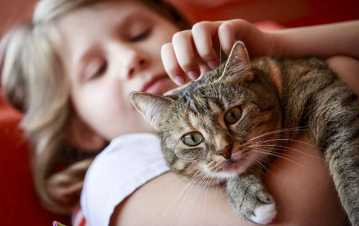

<body>

<div class="container">
  <div class="main-container">

    <div class="content-container">
      <div class="image-container">
        <h1>What Are The Best Cat & Kitten Breeds For Kids?</h1>
        
      </div>

      <div *ngIf="!isFullTextShown">
        <p>Looking for a cat breed that's great for children? Look no further than these playful, affectionate
          companions.
        </p>

        <p>Cats are suitable pets for families with children because they are low-maintenance and easy to care for.
          However, you'll want to consider your family’s lifestyle in order to choose the right breed.
        </p>

        <h1>Abyssinian</h1>
        <p> Life with an Abyssinian is never boring. Highly energetic, charmingly entertaining, and insatiably curious,
          these busybodies are always on the prowl, unless it’s time to eat or sleep. Abyssinians, often called
          “Aby-silly-ans,” are natural athletes that aren’t afraid of heights. Affectionate, loyal, and people-oriented,
          this breed is best suited for families with children ages 6 and up.
        </p>
        <button (click)="toggleTextDisplay()" class="show-button" mat-button>Show More</button>
      </div>

      <div *ngIf="isFullTextShown">
        <p>Looking for a cat breed that's great for children? Look no further than these playful, affectionate
          companions.
        </p>

        <p>Cats are suitable pets for families with children because they are low-maintenance and easy to care for.
          However, you'll want to consider your family’s lifestyle in order to choose the right breed.
        </p>

        <h1>Abyssinian</h1>
        <p> Life with an Abyssinian is never boring. Highly energetic, charmingly entertaining, and insatiably curious,
          these busybodies are always on the prowl, unless it’s time to eat or sleep. Abyssinians, often called
          “Aby-silly-ans,” are natural athletes that aren’t afraid of heights. Affectionate, loyal, and people-oriented,
          this breed is best suited for families with children ages 6 and up.
        </p>


        <h1> Birman </h1>
        <p> Birmans are cats of many colors. They are active and playful but will quiet down when their human companions
          are busy. Birmans are social beings that fare well with other pets in the home. They remain steadfast and
          devoted to their pals for life. The breed’s intelligence makes them receptive to training. Gentle, patient,
          and loving, Birmans are an excellent choice for families with children.
        </p>

        <h1> Burmese</h1>
        <p> Extremely people-oriented and sweet-natured, Burmese cats crave close contact with their human companions,
          serving as lap warmers and wowing you with their amusing antics. Burmese cats have an almost doglike
          personality that is playful and easygoing. Their frisky, mischievous demeanor extends well into adulthood.
          Burmese cats will serve as playmates for children for years to come.
        </p>

        <h1> Maine Coon</h1>
        <p> Maine Coons have hearts of gold. They love to be around people but aren’t overly dependent. Often called
          “gentle giants,” Maine Coons, which are relaxed and laidback, get along well with children and other pets.
          Even as senior cats, Maine Coons retain their kitten-like personalities.
        </p>

        <h1> Manx</h1>
        <p> Add a Manx cat to your household, and there will never be a dull moment! These active cats with doglike
          personalities enjoy playing fetch and burying toys, and are fascinated by water. The breed is sweet and
          affectionate, and they enjoy being around their human companions. Adaptable, gentle, and even-tempered, Manx
          cats make for wonderful family cats.
        </p>

        <h1> Ragdoll</h1>
        <p> A great match for families with children, Ragdolls enjoy being picked up and carried around, hence the name.
          They are easygoing and gentle in temperament and well-behaved in manners. These puppy-like cats love to be
          near their families at all times and can even be taught to fetch or come when called.
        </p>

        <p> Independent, low-energy breeds wouldn’t be a good fit for families with energetic kids, while affectionate,
          animated breeds might not get the playtime they deserve from families with older, less active children. Furry
          felines with easygoing, loyal temperaments are good companions for children. Regardless of which breed you
          select, you’ll likely want one that is sociable, adaptable to a variety of situations, and somewhat playful.
        </p>

        <p> These are just a few cat breeds that go great with children. Be sure to thoroughly research available breeds
          before deciding which one is right for you.
        </p>
        <button (click)="toggleTextDisplay()" class="show-button" mat-button>Show Less</button>
      </div>
      <h2> 4 Cat or Kitten Breeds </h2>
      <div class="animal-grid">
        <div *ngFor="let dog of cuteDogs" class="animal-card">
          <a (click)="viewDogDetails(dog)">
            
            <h3 class="animal-name"> {{ dog.name }} </h3>
          </a>
          <hr>

          <button (click)="redirectToAnimalPage(dog)" class="animal-available" mat-button> View Adoptable Pets for This
            Breed
          </button>
        </div>
      </div>
    </div>
  </div>
</div>
</body>
